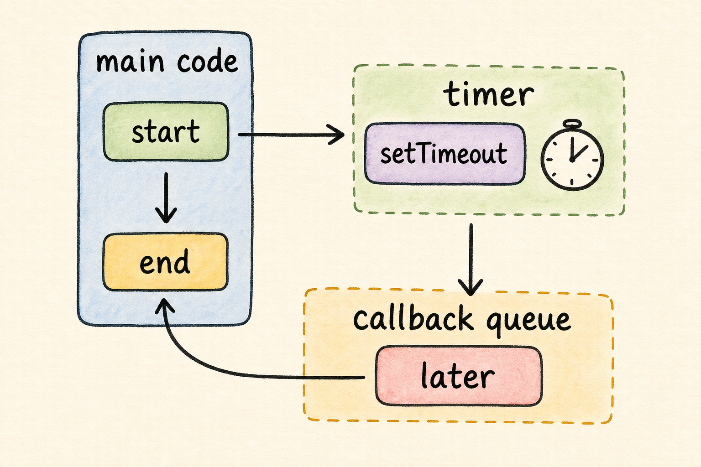

第 6 课：异步模型
Node.js 后端经常在等：等文件、等数据库、等网络、等定时器。异步模型的核心不是“快”，而是“等待时不要卡住主线”。

一、真实场景
想象你写一个后端接口：用户发请求后，程序要去数据库查数据。查询数据库需要时间。如果整个程序傻等，其他请求就会被拖住。Node.js 的异步模型就是为这类“要等，但不能傻等”的场景服务。
本课胜利条件：你能预测 start、end、later 的输出顺序，并能用 async/await 写一个看起来顺序清晰的异步程序。
二、先看一个反直觉输出
复制这个例子时，先不要急着解释，先观察输出顺序。
console.log("start");
setTimeout(() => {
console.log("later");
}, 1000);
console.log("end");你可能以为输出是 start、later、end。实际会是：
start
end
later原因是：setTimeout 只是登记一个以后执行的回调，主线代码不会停在原地等它。
三、三个说法：callback、Promise、async/await
它们都在处理异步，只是表达方式不同。
Callback
把一个函数交给别人：事情完成后，请调用这个函数。
setTimeout(() => {
console.log("later");
}, 1000);Promise
MDN 把 Promise 描述为表示异步操作最终完成或失败的对象。先理解成“未来会有结果的盒子”。
const result = Promise.resolve("done");
result.then((value) => {
console.log(value);
});async/await
async 函数可以使用 await 等待 Promise，让代码读起来更像顺序执行。
const value = await result;
console.log(value);四、复制粘贴练习
这次我们写一个小函数 wait，它会返回一个 Promise，用来模拟“等一会儿才完成”。
1. 创建目录
mkdir async-lab
cd async-lab2. 创建 package.json
{
"name": "async-lab",
"version": "1.0.0",
"private": true,
"type": "module",
"scripts": {
"dev": "node app.js"
}
}3. 创建 app.js
function wait(milliseconds) {
return new Promise((resolve) => {
setTimeout(() => {
resolve("finished waiting");
}, milliseconds);
});
}
console.log("start");
const result = await wait(1000);
console.log(result);
console.log("end");4. 运行
npm run dev你会先看到 start，大约 1 秒后看到：
finished waiting
end观察重点：await 让当前这段代码等 Promise 结果，但它不是把整个 Node.js 运行时锁死。以后数据库查询、网络请求、文件异步 API 都会用到这个心智模型。
五、逐行理解
wait 函数
wait(milliseconds) 创建一个 Promise，表示“未来会完成”。
setTimeout
setTimeout 登记一个定时器，到时间后调用里面的函数。
resolve
resolve("finished waiting") 表示 Promise 成功完成，并把结果交出去。
await
await wait(1000) 等 Promise 完成，然后把结果放进 result。
六、即时练习
题 1：下面代码先输出什么？
setTimeout(() => console.log("later"), 1000);
console.log("end");题 2：Promise 最适合先理解成什么？
回忆练习：用 3-5 句话解释：wait(1000) 为什么会等一秒后才给出 result？
七、课后小任务
把练习里的：
const result = await wait(1000);改成：
const result = await wait(2000);重新运行 npm run dev。如果等待时间变长，说明你已经把参数、定时器、Promise、await 这条链路串起来了。
如果卡住，把 app.js 和终端输出发给我，我会帮你定位是括号、Promise 还是 await 的位置问题。
主要来源
本课参考 Node.js Event Loop 文档、Node.js Timers 文档、MDN Promise 文档 和 MDN async function 文档。